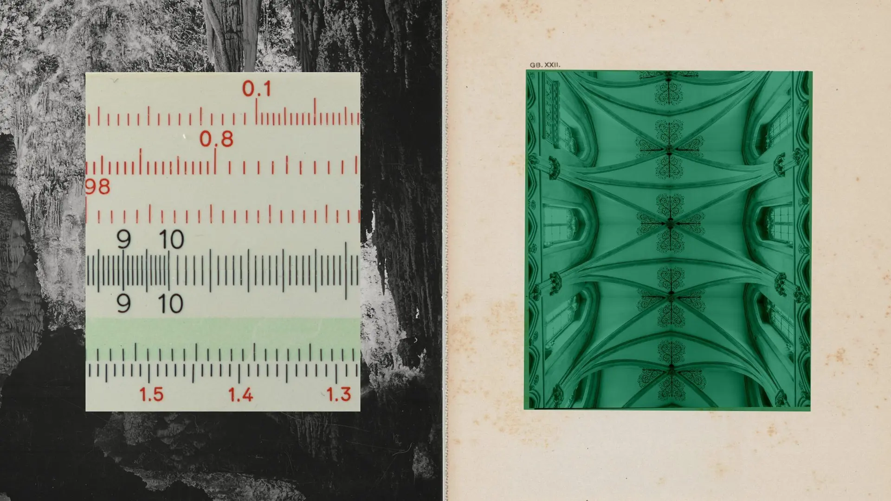
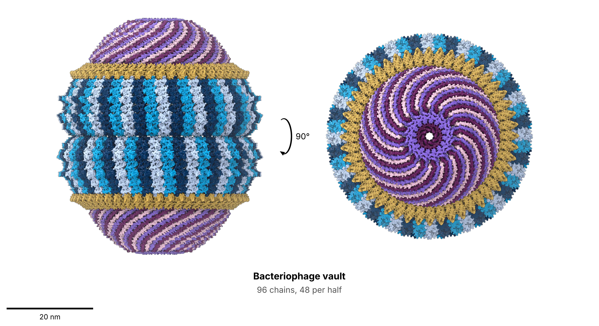
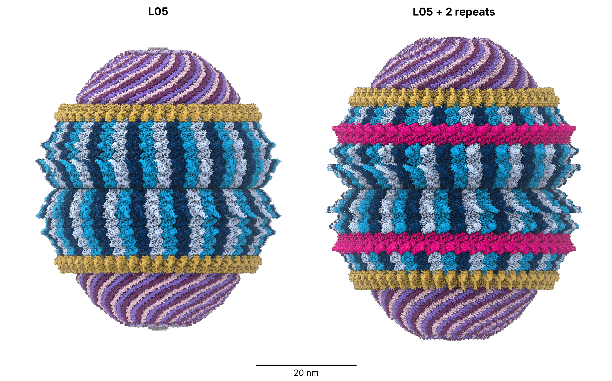
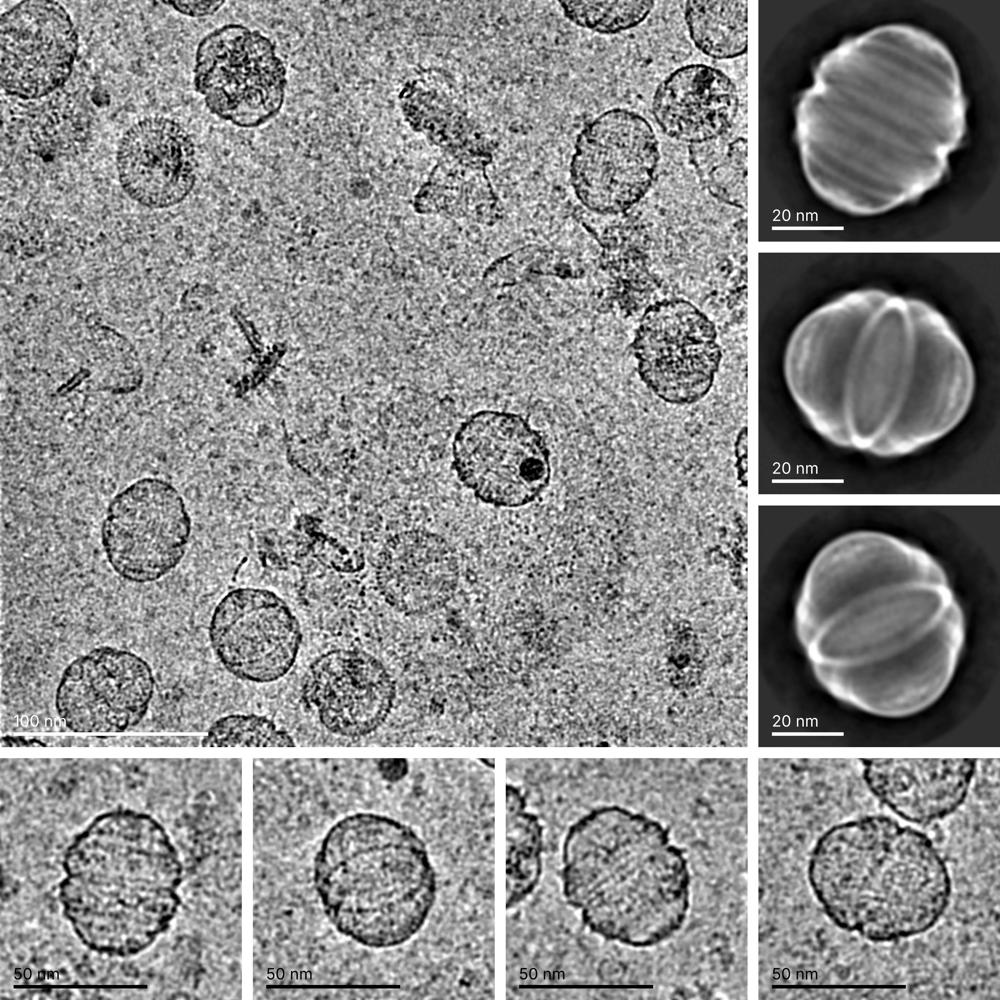

科学（Science） 2026 年 11 月 4 日 阅读预印本

已发布 2026 年 11 月 4 日 团队 科学 主题相关文章 * 科学 2026 年 11 月 6 日 教 AI 构建科学模型
我们正在分享来自Anthropic 生物学研究实验室的另一项发现：在原核细胞中发现的穹窿体颗粒的首个 3D 结构。穹窿体是存在于生命之树各类细胞中的大型中空蛋白质桶状结构，其功能至今未知。下文我们将介绍 Claude 如何在这项研究的每一步提供帮助：检索序列文献、优化颗粒分离方法，以及解析穹窿体的结构。更多信息见我们的预印本，我们已将其提交至 bioRxiv；链接一上线我们就会更新。 生物细胞最早于 1665 年被发现，但三个半多世纪之后，它们如何运作仍有许多未知。直到不久之前，某些关键组分的存在尚且存有争议，更不用说它们的功能了。即便在今天，研究得最透彻的细胞之一——细菌 E. coli ——约 4,400 个基因中仍有超过三分之一未被充分理解。另一个这样的谜团便是_穹窿体颗粒（vault particle）_。 穹窿体颗粒是一种大型中空的蛋白质外壳，几乎存在于我们身体的所有细胞中。它于 1986 年被发现，发现者是 Leonard Rome 和 Nancy Kedersha，但其功能至今仍难以捉摸。它的质量大约是核糖体的三倍，是真核生物（eukaryotes）——具有复杂细胞的生物，如哺乳动物（区别于简单的、通常为单细胞的"原核生物"，如细菌）——中已知最大的分子复合物之一。穹窿体因其形状得名。在电子显微镜下观察时，带肋的外壳让 Rome 博士和 Kedersha 博士想起大教堂的拱形穹顶。在哺乳动物中，外壳由 78 个拷贝的主要穹窿体蛋白（major vault protein）组成，排列成两个完全相同的半体，在中部相连。 从黏菌到人类，穹窿体遍布真核生物演化树的大部分分支，因此科学家相信它们必定有某种用处。研究者提出过多种功能，包括在细胞核与细胞质之间运输分子、保护细胞免受癌症药物等有毒化合物侵害、以及支持先天免疫，但没有一种提法得到确凿证实。另一些研究表明，缺乏穹窿体的小鼠依然能存活，这提示穹窿体或许只在特定环境条件下才是必需的。问题依然存在：如果它没有重要功能，演化为什么会保留下如此庞大的结构？ 我们的生物学研究团队一直想知道 Claude 能否在这个长期悬而未决的问题上带来进展，因此着手研究穹窿体。我们尚未确定它们的生物学功能，但确实发现：生命之树上还有多得多的穹窿体蛋白——包括原核生物以及感染它们的噬菌体中的那些——能够组装成完整的类穹窿体颗粒。相关蛋白此前已被发现存在于原核生物和噬菌体的基因组中，但据我们所知，还没有人证明它们会组装成穹窿体。 原核细胞中的穹窿体为研究者提供了一个更简单的研究系统。与哺乳动物细胞相比，细菌生长迅速，因而更容易探究穹窿体从何而来、基本结构是什么样子，以及它们（如果有的话）里面装着什么。研究人类蛋白在细菌中的同源物此前就带来过不少启示。细菌版本的 cGAS–STING 信号通路、gasdermin 蛋白和 viperin 蛋白揭示了这些人类免疫防御机制的微生物起源。在那些例子里，它们在人体中的功能早已已知；对穹窿体却并非如此，而它们的原核近亲或许能帮助揭开谜底。 在本文中，我们讲述如何解析出一种来自_噬菌体（bacteriophage）_的穹窿体的分子结构。噬菌体是感染细菌的病毒。和所有病毒一样，它们劫持宿主细胞来制造自己的蛋白，因此这个穹窿体是在细菌——一种原核细胞——内部组装的。该穹窿体由单一蛋白的 96 个拷贝构成，而人类穹窿体是 78 个。通过复制该蛋白的一部分，我们把穹窿体改造得更大。这些结果共同揭示了此类复合物如何组装，并提示它们可以如何被改造用于生物技术——例如作为递送酶的纳米胶囊。

L05 穹窿体的端帽。（左）冷冻电镜拍摄的整个穹窿体。（右）从上方看到的端帽。全部 48 条链从边缘向顶端盘绕，一路相互重叠。其中三分之二越过第一层继续延伸，三分之一到达顶端，因此端帽像阶梯状穹顶一样逐级收窄。 这项工作也体现了我们团队更宏大的目标：把 Claude 嵌入流程的每一步，从而加速基础生物学研究。在我们的指导下，Claude 检索了蛋白质数据库、设计了 DNA 构建体、优化了分离方法，并处理了显微图像数据。结果，常规需要三天的穹窿体纯化，我们只用了约 90 分钟；34 小时后第一个结构模型就就绪了，而我们估计这在通常情况下要花上数周。 尽管有这些进展，关于这些令人困惑的结构仍有许多要弄清的地方。当我们把结构拿给受邀为这项研究提供咨询的 Rome 博士看时，他说： 弄清穹窿体的功能仍然极具挑战。我很高兴 Anthropic 拥有这么多优质数据。如今，其他人也会着手研究这个问题……Anthropic 的发现[s]之广，说明它的功能会相当复杂，也将是一段有趣的旅程。 我们实验室选择提前公布这些发现，以持续向科学界展示 Claude 如何用于科学发现。关于我们的结果与方法，可阅读我们的预印本；我们也将很快公布结构和更多数据。
我们用冷冻电子显微镜（cryo-EM）解析出该穹窿体结构：把某个颗粒的许多拷贝快速冷冻，用电子束成像，再合并成单一的 3D 模型。该穹窿体由一种单一噬菌体蛋白的 96 个拷贝（每半 48 个拷贝）构成，我们把它命名为 L05，总质量约 9.5 兆道尔顿。相比之下，哺乳动物的版本每半有 39 个拷贝。来自噬菌体的穹窿体也更短更宽：长约 54 纳米、宽约 45 纳米，而哺乳动物的是 67 乘 40。尽管更短，由于更接近球形，它包围的体积反而多出约 25%。构成其外壳壁的蛋白链由七个首尾相接的重复片段堆叠而成，而不是哺乳动物穹窿体中的九个；其端帽也更平。它是原核生物中迄今发现的最大蛋白质外壳之一。 它结构上有一个显著特点：端帽如何闭合。一圈由 48 个拷贝组成的外壳必须向极点收窄，而它分三步完成，像一座分层穹顶。在每三个相邻拷贝组成的一组里，一个止于第一级，一个止于第二级，一个一直延伸到顶端。这三个拷贝在外壳壁上完全相同，但在端帽中呈现不同的形状（构象，conformations）。 既然我们能在实验室里造出这种穹窿体并快速分离它，我们也尝试改动它的结构，以进一步了解这些蛋白如何组装。在 Claude 的协助下，我们制作了 15 个改造版本，多数改动位于相邻拷贝相互接触的位置。端帽附近的一些单点改动就足以阻止外壳闭合：我们看到的不是封闭的穹窿体，而是敞开的、玫瑰花结状的颗粒，这说明该区域是封合外壳所必需的。 我们还尝试把穹窿体做得更大。通常外壳壁由七个重复片段构成。当我们复制其中两个，使蛋白拥有九个片段——与人类穹窿体相同的数目——它组装成了更大的穹窿体颗粒，所包围的体积增加约 20%。这些实验说明，穹窿体在演化史上可以通过复制自身外壳壁的片段来改变大小，而不破坏其组装方式。

L05 穹窿体（左）与一个每个拷贝都多出两个片段的改造版本（右）并排，均为冷冻电镜成像、同一比例。增加的重复片段让穹窿体更长也更宽。穹窿体 40 年来始终未获解释，部分原因在于它们缺席于生物学家最常依赖的遗传实验生物——包括面包酵母、果蝇和线虫。在确实拥有穹窿体的小鼠中，那些被培育成缺少穹窿体伴侣蛋白或穹窿体 RNA的个体也发育正常，没有留下可供追查的明显缺陷。近年来，生物信息学家在原核生物中鉴定出穹窿体蛋白的远缘同源物，但这些蛋白是否会形成穹窿体并不清楚。 我们团队着手回答这个问题。研究需要几个步骤：普查基因序列，找出穹窿体蛋白在生命之树上的分布；制备并分离最有希望的候选者，检验它们是否真的组装成类穹窿体颗粒；再解析其中一个颗粒的结构，看看它的链是如何拼合在一起的。 我们首先用 Claude Science 在约 150 亿个预测蛋白的数据库中搜索穹窿体蛋白的同源物。结果发现它们稀有却分布广泛：存在于细菌的 29 个主要类群（门，phyla）和古菌的 4 个类群（原核生物的另一大分支）中，但在已测序基因组的物种里占比不到 1%。随后我们挑出其中 44 种蛋白，逐一在无细胞系统中测试，看哪些基因能产生全长蛋白、产量多少。蛋白由我们选定，Claude 则把每条蛋白序列转换成适配宿主细胞的 DNA，加上开启基因所需的控制序列，并准备好可供下单的设计。我们把表现最好的那些转入活的 E. coli 细菌，其中 24 个里有 15 个产生了可溶蛋白。 接下来需要分离这些颗粒。为分离真核生物穹窿体而开发的常规方法，是让样品在密度逐渐升高的糖溶液中离心，约需三天。为了提速，我们决定尝试尺寸排阻色谱（size-exclusion chromatography）。在这一过程中，样品流经装有多孔微珠的层析柱。在称为分级分离（fractionation）的过程里，小分子会卡在孔隙中，而穹窿体因太大无法进入，最先流出，出现在所谓的空隙体积（void volume）中。 Claude 起初反对采用色谱法，因为错误折叠的蛋白团块也会出现在同一个空隙体积里。我们还是照做了，而 Claude 通过推荐一款特定的层析柱，以及追踪穹窿体蛋白、检查颗粒是否形成的方法，帮我们把这条路走通。随后 Claude 提议把破碎细胞的内容物不作任何预先纯化，直接上柱。起初我们有些犹豫，因为这些层析柱价格昂贵，而破碎 E. coli 细胞的粗提物可能堵塞柱子或造成污染。但我们愿意试一试这个不合常规的想法，结果它奏效了。 我们并不是第一个用分子筛层析柱分离穹窿体的团队，但我们优化后的方法从细胞到电镜载网只需约 90 分钟，而不是数天。在电子显微镜下，15 种蛋白中有 7 种组装成了类穹窿体颗粒。 冷冻电镜证实了其中 4 种的穹窿体形状，2 种来自噬菌体，2 种来自细菌。我们选择其中一种噬菌体蛋白 L05 做上文详述的结构解析，因为它最擅长形成完整、闭合的颗粒。解析生物大分子结构往往需要用专业软件手工操作数周乃至数月。整个过程由我们指导 Claude 完成。在一个可调用内部计算资源的内部多智能体框架中，Claude 搭好了开源处理软件（RELION）并运行了每一步，而我们则就分析决策提供建议。第一个完整模型在 34 小时内就绪，最终密度图在处理开始约一周后完成。

在 E. coli 中制备的 L05 穹窿体的冷冻电镜图：一片颗粒（大图）、挑选出的单个穹窿体（下方），以及可见外壳肋条的二维分类平均图（右侧）。 Claude 还指出了结构中一个我们尚无法解释的特征。在 96 个蛋白拷贝各自中途的一个口袋里，结合着一个小分子：它在密度图中清晰可见，我们却没能鉴定出来。Claude 发现它的形状类似辅酶 A（coenzyme A）——细胞用来转运化学基团的常见辅助分子。如果它真是辅酶 A 或某种相似物，那将是关于其可能功能的一个早期线索。对我们来说，这是一种迥然不同的做科学的方式。我们当中没有人处理过如此庞大的蛋白组装体，在结构生物学方面经验也有限。但我们还是接下了这个项目，因为 Claude 能弥补我们不懂的部分，并快速完成那些原本会花掉我们多得多时间的分析。 在不到四个月里，我们筛选了数十种候选穹窿体，制备了电镜样品，并解析出原核生物中发现的第一个穹窿体结构。其中大部分工作，一个能使用现有 Claude 产品的普通实验室就能完成。只有冷冻电镜分析为节省时间并行使用了数百块 GPU，所需的计算资源可能超出学术机构的条件。 这种工作方式也让我们看清了 Claude 还有哪些地方需要改进。它写的一份方案要求使用含某种添加剂的培养基，而该添加剂会妨碍把 DNA 导入细胞，这让项目倒退了两周。在冷冻电镜处理早期，它跳过了一个标准步骤，生成了一张与镜像混叠、有缺陷的密度图，我们叫它别再自由发挥了（"请按常规来，除非常规行不通"）。 我们把学到的东西用于推动 Claude 的改进。我们把实验笔记分享给训练 Claude 的机器学习研究员，让他们看到模型在哪里出了错。这影响了 Claude 所学习的数据种类。项目推进过程中，随着新模型陆续到位，Claude 在这些任务上明显更熟练了：在 DNA 构建体设计上似乎更少出错，也更能识别实验中的潜在陷阱。在我们熟悉的领域，我们能很快发现错误；但在不熟悉的领域，这些错误就让我们付出了时间代价。总体而言，我们发现这种工作方式的好处远大于弊端，Claude 已经成为我们工作中不可或缺的一部分。 迄今为止，我们只在 E. coli 中造出了这些穹窿体，尚未检验它们是否会在天然存在的细菌和噬菌体中形成。要确定这些颗粒的功能还需要更多工作，而我们的研究只是让谜团更深了。正如 Rome 博士所说：
我们会发现它们全都在做同一件事吗？还是会看到穹窿体功能在演化中逐步发展？也许它们和人类穹窿体做着相同的事，那同样非常有意思。 我们会继续研究穹窿体的功能，并随着工作进展分享更多成果。
我们工作的细节见我们的预印本。如果你对这些穹窿体可能在做什么有想法，或者有可以用来验证的体系，我们希望听到你的声音：mdurrant[at]anthropic.com、nicholasp[at]anthropic.com。
Januka Athukoralage、Peter Yoon、Nicholas Perry、Matthew Durrant 以及 Anthropic 生命科学团队
披露：Rome 博士为有偿顾问，就文稿提供了反馈。
Read the preprint Published Nov 4, 2026 Team Science Topics
Related articles * Science Nov 6, 2026 Teaching AI to build scientific models
We’re sharing another finding fromAnthropic’s biology research lab: the first 3D structure of a vault particle found in prokaryotic cells. Vaults are large, hollow barrels of protein found in cells across the tree of life, and their function is still unknown. Below, we describe how Claude helped at each step of this research: searching across sequence literature, optimizing a method of isolating particles, and mapping the vault’s structure. More information is in our preprint, which we’ve submitted to bioRxiv; we’ll update the link as soon as it goes live. Biological cells were first detected in 1665, but more than three and a half centuries later, much of how they work remains unknown. Until relatively recently, the existence of some crucial components, let alone their function, was controversial. Even today, more than a third of the roughly 4,400 genes in one of the most comprehensively studied cells, the bacterium E. coli , remain poorly understood. Another such enigma is the vault particle. A vault particle is a large, hollow protein shell found in nearly all the cells in our body. It was discovered in 1986 by Leonard Rome and Nancy Kedersha, but its function remains elusive. At roughly three times the mass of a ribosome, it’s one of the largest known molecular complexes in eukaryotes—organisms with complex cells, such as mammals (as opposed to simple, usually single-celled “prokaryotes,” such as bacteria). Vaults take their name from their shape. When observed under an electron microscope, the ribbed shell reminded Dr. Rome and Dr. Kedersha of the vaulted ceiling of a cathedral. In mammals, the shell is made of 78 copies of the major vault protein, arranged as two identical halves joined at the middle. Vaults are found across most of the eukaryotic tree, from slime molds to humans, so scientists believe that they must do something useful. Researchers have proposed various functions, including transporting molecules between the nucleus and cytoplasm, protecting cells from toxic compounds such as cancer drugs, and supporting innate immunity, but none of these proposals have been conclusively confirmed. Other studies have shown that mice lacking vaults still survive, which suggests that vaults may be necessary only under specific environmental conditions. Still, the question remains: why would evolution retain something so large if it didn’t have an important function? Interested in whether Claude could help make progress on this long-standing open problem, our biology research team has been investigating vaults. We haven’t yet determined their biological function, but we did find that many more vault proteins across the tree of life, including those in prokaryotes and the bacteriophages that infect them, can assemble into complete vault-like particles. Related proteins had already been found in the genomes of both prokaryotes and phages, but to our knowledge no one had shown that they assemble into vaults. A vault in a prokaryotic cell gives researchers a simpler system to study. Compared with mammalian cells, bacteria are quick to grow, which makes it easier to investigate where vaults came from, what their basic structure looks like, and what, if anything, they contain. Studying the bacterial relatives of human proteins has been informative before. Bacterial versions of cGAS–STING signaling, gasdermins, and viperins revealed the microbial origins of these human immune defenses. In those cases, their function in humans was already known. For vaults it is not, and their prokaryotic relatives may help reveal it. Here, we describe how we uncovered the molecular structure of a vault from a bacteriophage. Bacteriophages are viruses that infect bacteria. Like all viruses, they hijack their host cells to make their proteins, so this vault would be built inside a bacterium, a prokaryotic cell. The vault is built from 96 copies of a single protein, compared with 78 in human vaults. By duplicating part of the protein, we engineered the vault to be even larger. Together, these results shed light on how such complexes assemble and suggest how they could be adapted for biotechnology—for example, as nanocapsules for delivering enzymes. The cap of the L05 vault. (Left) the whole vault, imaged by cryo-EM. (Right) its cap seen from above. All 48 chains wind in from the rim toward the tip, overlapping as they go. Two-thirds continue past the first tier and one-third reach the tip, so the cap narrows like a stepped dome. This work also demonstrates our team’s wider aim: to speed up research in fundamental biology by building Claude into every step of the process. Under our direction, Claude searched protein databases, designed the DNA constructs, optimized the isolation method, and processed the microscopy data. As a result, a vault purification that conventionally takes three days took us about 90 minutes, and a first structural model was ready 34 hours later, which we estimate would normally have taken us weeks. Despite this progress, there is still much to be learned about these perplexing structures. When we shared the structure with Dr. Rome, whom we brought on to advise us on this research, he said: Figuring out the function of vaults is still enormously challenging. I am pleased that Anthropic has so much good data. Now, other people will be working on this problem … The broadness of Anthropic’s finding[s] suggests that it is going to be a complicated function and an interesting ride. Our lab is releasing these findings early to continue to show the scientific community how Claude can be used for discovery. You can read more about our results and methods in our preprint, and we will be releasing the structures and additional data soon.
We uncovered the vault structure using cryo-electron microscopy (cryo-EM), in which many copies of a particle are flash-frozen and imaged with an electron beam, before being combined into a single 3D model. The vault is built from 96 copies (48 copies per half) of a single phage protein, which we call L05, with a combined mass of about 9.5 megadaltons. By contrast, the mammalian version has 39 copies per half. The phage-derived vault is also shorter and wider: roughly 54 nanometers long and 45 wide, compared with 67 by 40 in mammals. Despite being shorter, it encloses about 25% more volume because it is more spherical. The protein chain that makes up its wall is built from seven repeating segments stacked end to end, rather than the nine in mammalian vaults, and its end caps are flatter. It’s among the largest protein shells ever identified in prokaryotes. One notable feature of its structure is how the caps close. A wall 48 copies around must narrow toward the pole, and it does so in three steps, like a tiered dome. In every group of three neighboring copies, one ends at the first step, one at the second, and one continues to the tip. The three copies are identical along the wall, but take different shapes (conformations) in the cap. Given that we can make this vault in the lab and isolate it quickly, we also experimented with altering its structure to learn more about how these proteins assemble. Working with Claude, we made 15 altered versions of the protein, most with changes at the points where neighboring copies touch. Some single changes near the cap were enough to prevent the shell from closing: in place of sealed vaults we saw open, rosette-like particles, which shows that this region is needed to seal the shell. We also tried making the vault even bigger. Ordinarily, the wall is built from seven repeating segments. When we copied two of them, giving the protein nine—the same number as in the human vault—it assembled into even larger vault particles, increasing the enclosed volume by approximately 20%. These experiments demonstrate how vaults could have changed size over their evolutionary history by duplicating pieces of their own wall without disrupting how they assemble. The L05 vault (left) beside an engineered version (right) with two extra segments in every copy, both by cryo-EM at the same scale. The added repeats make the vault longer and wider.
Part of the reason vaults have remained unexplained for 40 years is that they are missing from the organisms biologists rely on most for genetic experiments, including baker’s yeast, fruit flies, and nematode worms. In mice, which do have vaults, animals that are bred without a vault partner protein or the vault RNA develop normally, leaving no obvious defect to follow up. In recent years, bioinformaticians identified distant relatives of the vault protein in prokaryotes, but it wasn’t clear whether these proteins formed vaults. Our team set out to answer that question. The research required several steps: surveying genetic sequences to find where vault proteins occur across the tree of life, producing and isolating the most promising candidates to test whether they actually assemble into vault-like particles, and determining the structure of one of the particles to see how its chains fit together. We began by using Claude Science to search for the vault protein’s relatives across a database of about 15 billion predicted proteins. They turned out to be rare but widely distributed, present in 29 major groups (phyla) of bacteria and four of archaea (the other main group of prokaryotes) but in less than 1% of species with a sequenced genome. We then chose 44 of these proteins and tested each in a cell-free system to see which genes yielded full-length protein and how much. We chose the proteins, and Claude turned each protein sequence into DNA tailored to the host cell, added the control sequences that switch a gene on, and prepared the designs for ordering. We moved the best performers into living E. coli bacteria, where 15 of 24 produced soluble protein. Next, we needed to isolate the particles. The conventional method, developed for eukaryotic vaults, spins the sample through a tube of increasingly dense sugar and takes approximately three days. To speed this up, we decided to try size-exclusion chromatography. In this process, the sample flows through a column of porous beads. In a process called fractionation, small molecules get stuck in the pores, while the vaults, which are too big to enter, come out first, in what’s known as the void volume. Claude first argued against taking the chromatography approach, because clumps of misfolded protein come out in that same void volume. We went ahead anyway, and Claude helped make it work by recommending a specific column as well as methods to track the vault protein and check whether particles had formed. Claude then proposed loading the contents of ruptured cells straight onto the column with no purification beforehand. We were reluctant at first because these columns are expensive, and the raw contents of ruptured E. coli cells can clog them or cause contamination. But we were willing to test an unconventional idea, and it worked. We are not the first group to isolate vaults on sizing columns, but our optimized method takes about 90 minutes from cells to microscopy grid instead of days. Under an electron microscope, seven of the 15 proteins had assembled into vault-like particles. Cryo-EM confirmed the vault shape for four of those seven, two from phages and two from bacteria. We chose one of the phage proteins, L05, for the detailed structure described above because it was among the best at forming complete, closed particles. Determining a biomolecular structure often takes weeks or months of manual work with specialized software. We directed Claude through the whole process. Working in an internal multi-agent harness with access to internal compute resources, Claude set up an open-source processing software (RELION) and ran each step, while we advised on the analysis decisions. A first full model was ready in 34 hours, and the final maps were ready about a week after processing began. Cryo-EM of L05 vaults made in E. coli : a field of particles (large panel), selected single vaults (bottom), and 2D class averages in which the ribs of the wall are visible (right). Claude also pointed out a feature of the structure we can’t yet explain. A pocket partway up each of the 96 protein copies holds a small molecule that shows up clearly in the map but that we haven’t been able to identify. Claude found that its shape resembles coenzyme A, a common helper molecule that cells use to shuttle chemical groups around. If it is coenzyme A, or something similar, it would be an early hint at a possible function.
For us, this was a dramatically different way of doing science. None of us had worked with a protein assembly this large, and we had limited experience in structural biology. We took the project on anyway, because Claude could make up for what we didn’t know and rapidly perform analyses that would otherwise have taken us much longer. In under four months, we screened dozens of candidate vaults, prepared samples for the microscope, and solved the first vault structure found in prokaryotes. Most of this work could be achieved by a typical lab with access to existing Claude products. Only the cryo-EM analysis, which used hundreds of GPUs in parallel to save time, required more computing resources than might be available to an academic institution. Working this way also showed us where Claude needed improvement. A protocol it wrote called for a growth medium containing an additive that interferes with getting DNA into cells, which set the project back by two weeks. Early in the cryo-EM processing, it skipped a standard step and produced a flawed map blended with its mirror image, and we told it to stop improvising (“Please let’s do normal things unless they don’t work”). We have used what we’ve learned to inform Claude’s development. We shared our lab notes with the ML researchers who train Claude, so they could see where the model went wrong. This has informed the kind of data Claude learns from. Over the course of the project, Claude got much better at these tasks as new models arrived, making seemingly fewer errors in DNA construct design and better identifying potential pitfalls in experiments. In areas we knew well, we caught mistakes quickly, but they cost us time in areas we didn’t. Overall, we found that the benefits of working this way far outweighed the drawbacks, and Claude has become integral to our work. So far, we have made these vaults only in E. coli , and have yet to test whether they form in the bacteria and phages where they’re naturally found. More work is needed to determine the function of these particles, and our work only deepens the mystery. As Dr. Rome put it:
Will we find out that they are all doing the same thing? Or will we see an evolutionary development of vault function? Maybe they are doing the same thing as human vaults, and that is also very interesting. We will continue our research into the function of vaults, and will share more as this work progresses.
We are releasing the details of our work in our preprint. If you have an idea for what these vaults might be doing, or a system in which to test it, we would like to hear from you: mdurrant[at]anthropic.com, nicholasp[at]anthropic.com.
Januka Athukoralage, Peter Yoon, Nicholas Perry, Matthew Durrant, and the Life Sciences Team at Anthropic
Disclosure: Dr. Rome was a paid consultant, providing feedback on the manuscript.